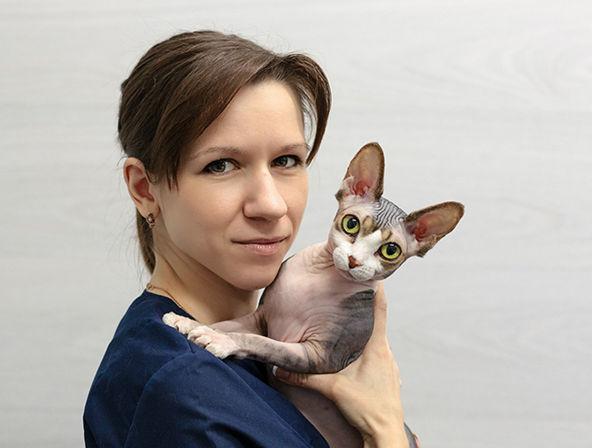
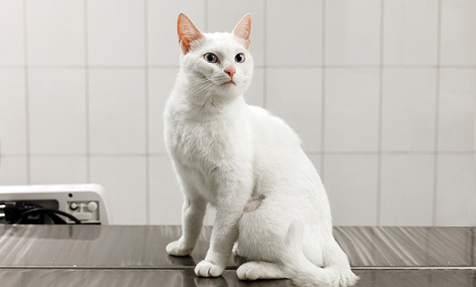
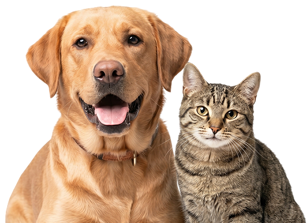
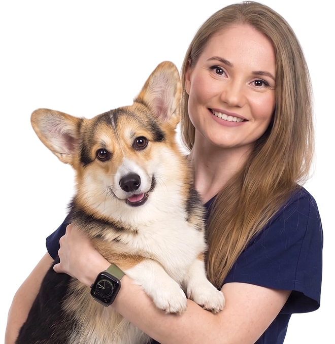

- Главная
- Блог
- Истории пациентов
- Иногда для диагноза требуется 10 минут времени
- Подробные рекомендации по подготовке кота к кастрации
- Предоперационный скрининг: анализы крови, ЭКГ и ЭХОКГ
- Анестезиологическое сопровождение каждой операции
- Сопровождение владельца до и после операции питомца
- Спокойная обстановка для снижения стресса у кошек

Кастрация кота — тема, вокруг которой всегда много вопросов, споров и переживаний. Одни владельцы считают процедуру обязательной частью заботы о питомце, другие боятся операции, наркоза, изменений в характере или набора веса. Здесь действительно важно разобраться: зачем проводят кастрацию, в каком возрасте это лучше делать, как проходит подготовка, чего ждать после процедуры и какие мифы давно пора оставить в прошлом.
В этой статье вместе с ветеринарными врачами клиники «Раденис» разберём, когда кастрация может быть полезна коту, как снизить риски во время операции и как помочь питомцу восстановиться спокойно и без лишнего стресса.
Чаще всего владельцы начинают задумываться об операции, когда появляются показания к кастрации кота.
- метки дома;
- громкие крики и беспокойство в период половой активности;
- постоянные попытки выбежать на улицу;
- конфликты с другими животными;
- выраженный стресс на фоне полового поведения;
- отсутствие планов на разведение;
- желание исключить появление нежелательного потомства;
- стремление снизить риск травматизации, некоторых заболеваний репродуктивной системы и гормонозависимых состояний
- крипторхизм — состояние, при котором одно или оба яичка не опустились в мошонку. Семенник, оставшийся в брюшной полости или паховом канале, находится в более высокой температуре, чем должна быть в норме. Со временем это повышает риск воспаления, перекрута, кистозных изменений и опухолевых процессов, поэтому в таких случаях кастрацию рассматривают не только как контроль полового поведения, но и как профилактику возможных осложнений.
После кастрации у многих котов действительно уменьшается выраженность полового поведения: питомец может реже метить, меньше кричать, спокойнее реагировать на других животных и перестать постоянно стремиться на улицу. Но важно понимать, что кастрация не всегда полностью решает такие проблемы.
| Столбик 1 | Столбик 2 | Столбик 3 |
| Критерий | Критерий | Критерий |
| Критерий | Критерий | Критерий |
| Критерий | Критерий | Критерий |
- у многих животных уменьшаются или полностью исчезают метки; кот может стать спокойнее дома;
- уменьшаются громкие крики и беспокойство в период половой активности;
- снижается риск нежелательного потомства;
- уменьшается риск некоторых заболеваний репродуктивной системы;
- владельцам проще контролировать жизнь домашнего питомца;
- снижение риска травм и драк у уличных/активных котов;
- уменьшение стремления к побегам;
- отсутствие постоянного гормонального стресса у части животных.
- кастрация проводится под наркозом, поэтому перед операцией важно оценить состояние здоровья кота;
- операция должна проводиться в условиях клиники операционной бригадой под контролем анестезиолога.
- после процедуры некоторым животным требуется более внимательный контроль питания и веса;
- часть котов становится менее активной;
- если метки или агрессия связаны не с половым поведением, а со стрессом, заболеванием или привычкой, проблема может сохраниться;
- операция требует подготовки, наблюдения после наркоза и соблюдения рекомендаций врача.

Кастрация кота — это плановая хирургическая операция по удалению семенников - желез, вырабатывающих половые гормоны. Операцию проводят под наркозом. Сама процедура обычно занимает немного времени, а после её завершения врач контролирует пробуждение питомца, дыхание, сердечный ритм и общее состояние после наркоза. Владельцу также рассказывают, как прошла кастрация, как кот может чувствовать себя в первые часы и дни после операции, на что стоит обращать внимание дома и какие реакции после наркоза считаются нормальными.Кастрация котов менее травматичная процедура, чем стерилизация у кошек. Разрезы обычно небольшие и не требуют сложного ухода, а многие питомцы уже через несколько дней начинают возвращаться к привычному образу жизни.
Отдельно поговорим о кастрации крипторхов — котов, у которых одно или оба яичка не опустились в мошонку. В таких случаях процедура отличается от стандартной, потому что не опустившийся семенник может располагаться в паховом канале или брюшной полости.
Мы рядом — чтобы поддержать, помочь и сделать всё возможное для здоровья и комфорта вашего питомца.Будем рады вас видеть в нашей клинике!
Запишитесь на прием
Кастрация кота — это плановая хирургическая операция по удалению семенников - желез, вырабатывающих половые гормоны. Операцию проводят под наркозом. Сама процедура обычно занимает немного времени, а после её завершения врач контролирует пробуждение питомца, дыхание, сердечный ритм и общее состояние после наркоза. Владельцу также рассказывают, как прошла кастрация, как кот может чувствовать себя в первые часы и дни после операции, на что стоит обращать внимание дома и какие реакции после наркоза считаются нормальными.
Не обязательно приходить к врачу уже с готовым решением. Первая консультация нужна, чтобы спокойно разобраться, как подготовить кота к кастрации, стоит ли делать операцию сейчас, лучше подождать или сначала проверить здоровье питомца.
На приеме врач осмотрит питомца, расспросит о поведении и объяснит:
- связано ли беспокойство, метки или крики с половой активностью;
- насколько кастрация может помочь именно в вашей ситуации;
- нет ли признаков болезни, стресса или дискомфорта;
- какой возраст подходит для операции;
- как готовить кота к кастрации без лишней суеты.
Отдельно стоит обсудить кастрацию кота с ожирением и кастрацию при мочекаменной болезни. Лишний вес может влиять на переносимость наркоза и восстановление, а при мочекаменной болезни врачу важно понимать, в каком состоянии сейчас мочевыделительная система. В таких ситуациях подготовка к кастрации и наблюдение после неё могут требовать более внимательного подхода.
Кастрация кота — это плановая хирургическая операция по удалению семенников - желез, вырабатывающих половые гормоны. Операцию проводят под наркозом. Сама процедура обычно занимает немного времени, а после её завершения врач контролирует пробуждение питомца, дыхание, сердечный ритм и общее состояние после наркоза. Владельцу также рассказывают, как прошла кастрация, как кот может чувствовать себя в первые часы и дни после операции, на что стоит обращать внимание дома и какие реакции после наркоза считаются нормальными.
Не обязательно приходить к врачу уже с готовым решением. Первая консультация нужна, чтобы спокойно разобраться, как подготовить кота к кастрации, стоит ли делать операцию сейчас, лучше подождать или сначала проверить здоровье питомца.
На приеме врач осмотрит питомца, расспросит о поведении и объяснит:
- связано ли беспокойство, метки или крики с половой активностью;
- насколько кастрация может помочь именно в вашей ситуации;
- нет ли признаков болезни, стресса или дискомфорта;
- какой возраст подходит для операции;
- как готовить кота к кастрации без лишней суеты.
Отдельно стоит обсудить кастрацию кота с ожирением и кастрацию при мочекаменной болезни. Лишний вес может влиять на переносимость наркоза и восстановление, а при мочекаменной болезни врачу важно понимать, в каком состоянии сейчас мочевыделительная система. В таких ситуациях подготовка к кастрации и наблюдение после неё могут требовать более внимательного подхода.
Да, при необходимости УЗИ можно повторять. Метод не связан с лучевой нагрузкой, поэтому подходит для контроля лечения, наблюдения за хроническими заболеваниями, беременности или ранее выявленными изменениями.
Да, при необходимости УЗИ можно повторять. Метод не связан с лучевой нагрузкой, поэтому подходит для контроля лечения, наблюдения за хроническими заболеваниями, беременности или ранее выявленными изменениями.
Да, при необходимости УЗИ можно повторять. Метод не связан с лучевой нагрузкой, поэтому подходит для контроля лечения, наблюдения за хроническими заболеваниями, беременности или ранее выявленными изменениями.
Да, при необходимости УЗИ можно повторять. Метод не связан с лучевой нагрузкой, поэтому подходит для контроля лечения, наблюдения за хроническими заболеваниями, беременности или ранее выявленными изменениями.
Да, при необходимости УЗИ можно повторять. Метод не связан с лучевой нагрузкой, поэтому подходит для контроля лечения, наблюдения за хроническими заболеваниями, беременности или ранее выявленными изменениями.
Да, при необходимости УЗИ можно повторять. Метод не связан с лучевой нагрузкой, поэтому подходит для контроля лечения, наблюдения за хроническими заболеваниями, беременности или ранее выявленными изменениями.
Да, при необходимости УЗИ можно повторять. Метод не связан с лучевой нагрузкой, поэтому подходит для контроля лечения, наблюдения за хроническими заболеваниями, беременности или ранее выявленными изменениями.
Да, при необходимости УЗИ можно повторять. Метод не связан с лучевой нагрузкой, поэтому подходит для контроля лечения, наблюдения за хроническими заболеваниями, беременности или ранее выявленными изменениями.
- Рентген диагностика
- Рентгеновские снимки суставов для РКФ
- Дентальный рентген
- Лабораторная диагностика
- Экспресс-анализы крови
- Рентген диагностика
- Рентгеновские снимки суставов для РКФ
- Дентальный рентген
- Лабораторная диагностика
- Экспресс-анализы крови
- Рентген диагностика
- Рентгеновские снимки суставов для РКФ
- Дентальный рентген
- Лабораторная диагностика
- Экспресс-анализы крови

{kind=link}
{kind=link}
{kind=link}
{kind=link}